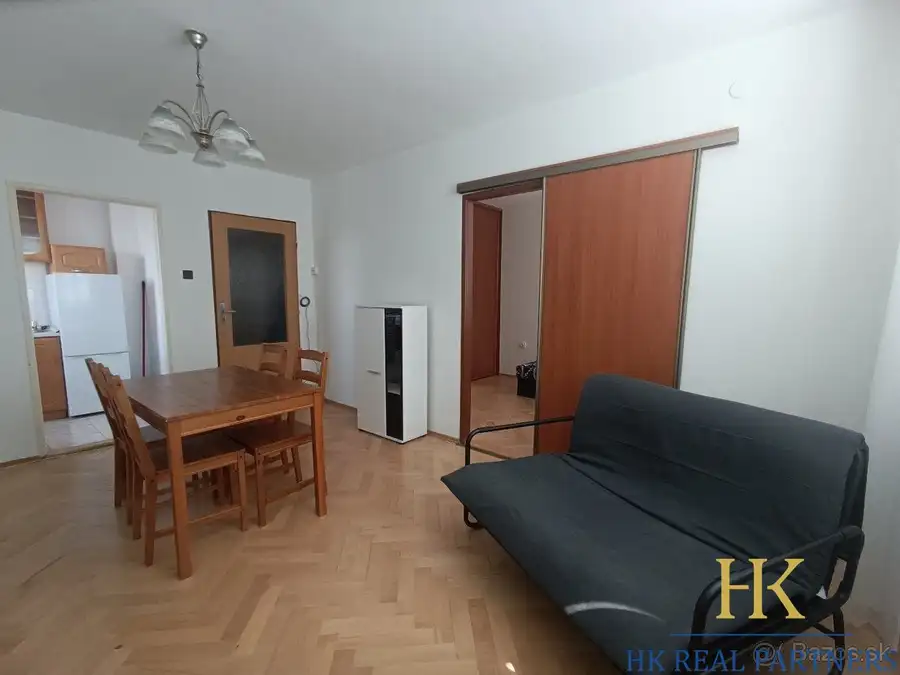

Predaj pekný 1 izbový byt, Podunajské Biskupice, s balkónom
Podunajské Biskupice, Bratislava
- Dispozícia1-izbový
- Plocha34.2 m²
- Poschodie6. z 8
- StavKompletná rekonštrukcia
- VlastníctvoOsobné
- Energetická triedaB
O nehnuteľnosti
HK Real partners Vám ponúka 1 izbový byt, ulica Kazanská, Podunajské Biskupice, Bratislava II.Nachádza sa na 6. poschodí zo 7. S výťahom. S balkónom, 3, 68 m2. S murovanou pivnicou. Rozloha: 34,20 m2.Dispozícia: vstupná chodba. Kuchyňa samostatná s výstupom na balkón. Obytná miestnosť. V kúpeľni vaňa. WC samostatné. Kopka na poschodí pri byte. Mesačné náklady: 150,-Eur.Bytový dom v staršej novostavbe z roku 2005. Rekonštrukcia prebehla v roku 2022.Lokalita: ponúka kompletnú občiansku vybavenosť a výbornú dostupnosť do centra Bratislavy. V pešej dostupnosti sa nachádzajú obchody, služby, školy, škôlky, zdravotné stredisko, pošta, športoviská aj zastávky MHD. Výhodou je pokojnejšia orientácia bytu mimo hlavnej dopravnej tepny. Bonusom tejto ponuky je novo zrekonštruovaný park s detským ihriskom priamo za bytovým domom, ktorý vytvára príjemné prostredie na oddych a voľnočasové aktivity. Rýchle napojenie na diaľničný obchvat. Cyklotrasy a možnosti pre šport.Vhodný ako štartovací byt, investícia na prenájom alebo bývanie v pokojnej a vyhľadávanej lokalite s kompletnou občianskou vybavenosťou. Cena: 175 000,-Eur Vrátane provízie. V cene sú náklady spojené s predajom a prevodom nehnuteľnosti - katastrálne poplatky, vypracovanie zmlúv, kompletný právny servis v cene.KONTAKT: 0903234033Mail kontakt: hana@hkreal.sk
Parametre
| Bezpečnosť | Bezpečnostné dvere, Elektronická brána |
|---|---|
| Cena vrátane energií | Nie |
| Doprava | Diaľnica, MHD, Cyklistická infraštruktúra, Trolejbus |
| Druh | 1 izbový byt |
| Dátum zverejnenia | 30. 9. 2026 |
| Energetický certifikát budovy | B |
| Podlažie | 6 |
| Počet balkónov | 1 |
| Počet izieb / miestností | 1 |
| Počet nadzemných podlaží | 8 |
| Počet pivníc | 1 |
| Počet spální | 1 |
| Rok poslednej rekonštrukcie | 2022 |
| Rok výstavby | 2005 |
| Stav nehnuteľnosti | Kompletná rekonštrukcia |
| Telekomunikácie | Optická sieť |
| Typ | Predaj |
| Typ konštrukcie | Zmiešaná |
| Vlastníctvo | Osobné |
| Vybavenie | Balkón, Pivnica, Výťah, Verejné parkovanie |
| Vybavenie objektu | Štandardné |
| Vykurovanie | Lokálne |
| Zariadenie | Čiastočne zariadené |
| Úžitková plocha | 34.2 m² |
Kde to je


Mohlo by Vás zaujímať
 BytNové9
1 050 €Prenájom 4 izbový byt, priestranný, Gallayova ulica, zariadený, Dúbravka, BA IV
Dúbravka, Bratislava
4-izbový76 m²3. podlažie
HK Real Partners Vám ponúka na prenájom priestranný 4 izbový byt, ulica na Gallayova, Dúbravka, Bratislava IV. Rozloha: 76 m2. S výťahom. S lodžiou.…
BytNové9
1 050 €Prenájom 4 izbový byt, priestranný, Gallayova ulica, zariadený, Dúbravka, BA IV
Dúbravka, Bratislava
4-izbový76 m²3. podlažie
HK Real Partners Vám ponúka na prenájom priestranný 4 izbový byt, ulica na Gallayova, Dúbravka, Bratislava IV. Rozloha: 76 m2. S výťahom. S lodžiou.…
 BytNové10
154 800 €Predaj útulnej garsónky, ulica Saratovská, po rekonštrukcii, Dúbravka, BA IV
Dúbravka, Bratislava
27.5 m²5. podlažie
HK Real Partners Vám ponúka exkluzívne na predaj garsónku, ulica Saratovská, Dúbravka, Bratislava IV. Rozloha: 27,5 m2. Nachádza sa na 5. poschodí z…
BytNové10
154 800 €Predaj útulnej garsónky, ulica Saratovská, po rekonštrukcii, Dúbravka, BA IV
Dúbravka, Bratislava
27.5 m²5. podlažie
HK Real Partners Vám ponúka exkluzívne na predaj garsónku, ulica Saratovská, Dúbravka, Bratislava IV. Rozloha: 27,5 m2. Nachádza sa na 5. poschodí z…

BytNové10 Cena dohodouPrenájom 2 izbový byt, zariadený, Hradištná ulica, Devínska Nová Ves Devínska Nová Ves, Bratislava 2-izbový44 m²2. podlažie HK Real Partners Vám ponúka 2 izbový byt, ulica Hradištná, Devínska Nová Ves, Bratislava IV. Rozloha: 44 m2. Nachádza sa na 2. poschodí zo 4. Bez…